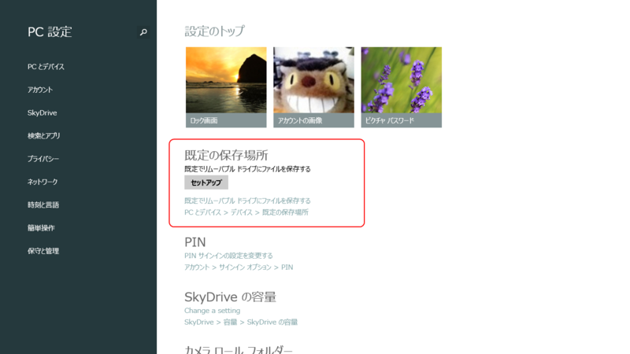
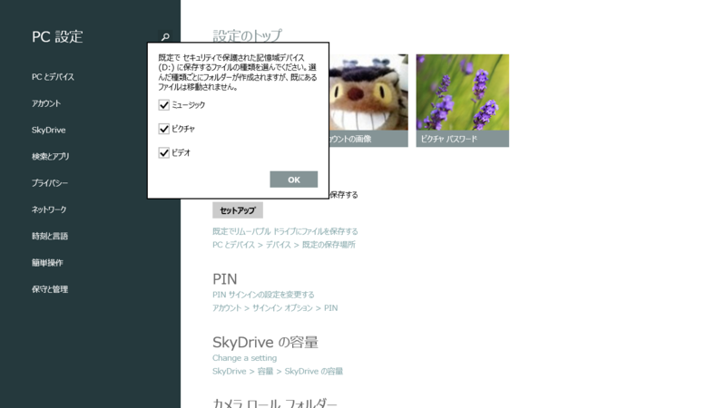
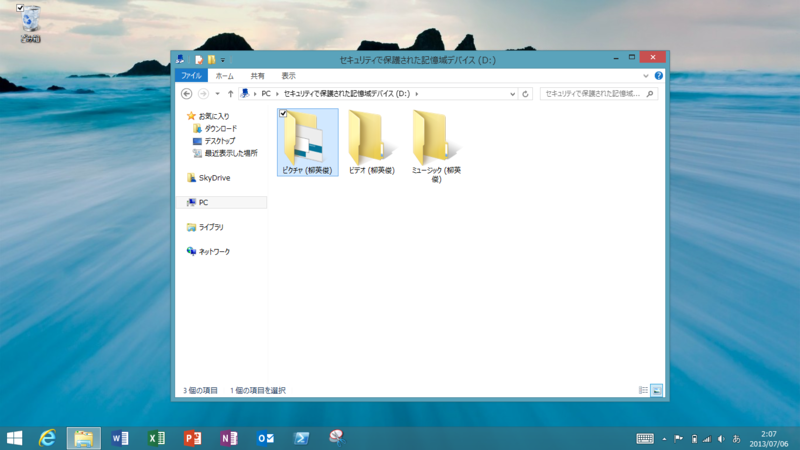
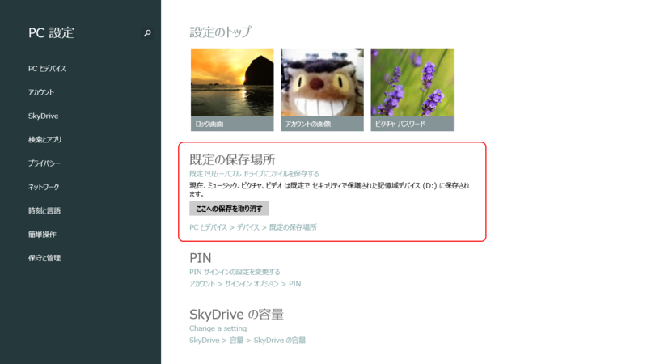
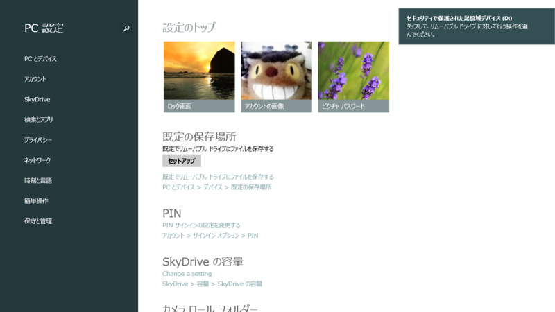
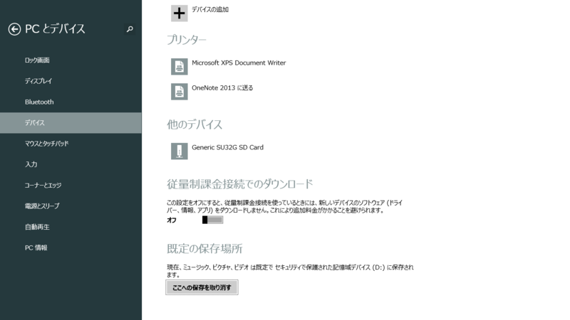

Windows 8.1 RT: デフォルトの保存先を SD カードにする
公開日：

なんや、Windows 8.1 RT に新しいオプションが追加されとるやないか。どれどれおっちゃんに見せてみぃ。
というわけで、すのこタン。とプロ生ちゃんのコラボイベントをなぜか手伝ってきた - だるろぐ のときにアキバで Surface RT に挿すための SD カードを仕入れてきた。

サンディスク SanDisk microSDHC UHS-I カード 32GB 超高速クラス10 世界国内シェアNo.1 並行輸入品パッケージ品
- 出版社/メーカー: SanDisk
- メディア: エレクトロニクス
- 購入: 2人 クリック: 15回
- この商品を含むブログを見る
ちなみに、アキバで買うより Amazon のほうが安かった（死

セットアップを行うと、SD カードにピクチャ・ビデオ・ミュージックフォルダが作成される。

ライブラリ*1にも追加され、既定の保存先になる。ためしにブラウザーで画像を保存したら、ちゃんと SD カードに保存された。“セキュリティで保護された記憶域デバイス”とあるように、カードは暗号化される。そのため、万が一盗まれてもデータを読み取ることは難しい（はず）。*2

ちなみに、［ここへの保存を取り消す］ボタンを押すと、ライブラリの既定の保存先がローカルドライブに戻るが、ライブラリからは削除されない。

SD カードを抜くと、一時的にローカルドライブが既定の保存先になるが、挿せば再び SD カードが既定の保存先になる。

同様の設定は［PC の設定］－［デバイス］にもある。機能はまったく同じ。